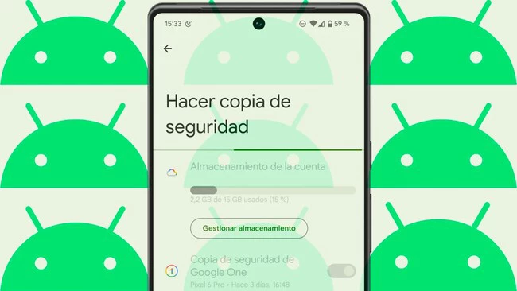
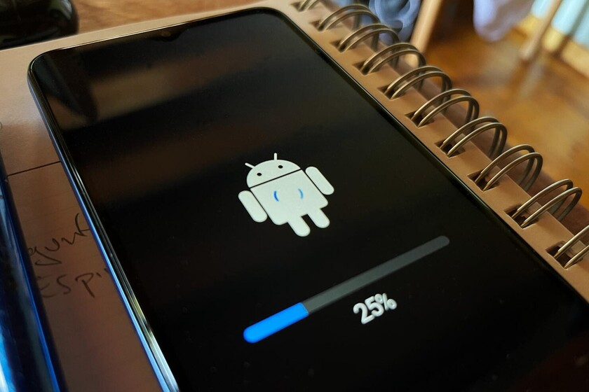
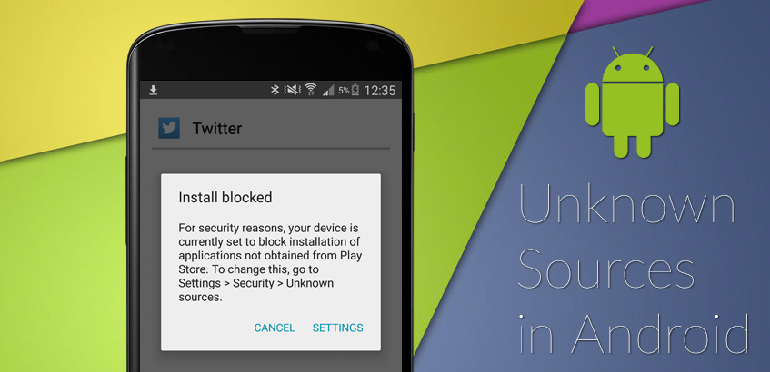

Consejos de Seguridad
Para proteger la información personal en un dispositivo Android, se recomienda adoptar prácticas que minimicen los riesgos y aseguren que los datos estén lo más protegidos posible:
- Uso de redes seguras:Evitar conectarse a redes Wi-Fi públicas no protegidas. Usar redes VPN (Virtual Private Network) cuando se accede a Internet desde redes Wi-Fi no confiables para cifrar el tráfico y proteger los datos.
- Realizar copias de seguridad (backups): Es esencial realizar copias de seguridad periódicas de los datos del dispositivo, incluyendo contactos, fotos y documentos importantes. Android ofrece opciones de copia de seguridad en Google Drive y otros servicios en la nube. Además, se pueden utilizar aplicaciones de terceros para hacer backups locales o en la nube. 
- Actualizar regularmente el sistema operativo y las aplicaciones: Las actualizaciones de software no solo mejoran el rendimiento del dispositivo, sino que también corrigen vulnerabilidades de seguridad. Asegúrate de instalar las actualizaciones cuando estén disponibles. 
- Instalar aplicaciones solo desde fuentes confiables:Evitar instalar aplicaciones fuera de la Google Play Store, ya que estas pueden contener malware. Asegúrate de revisar los permisos de las aplicaciones antes de instalarlas. 
- Usar autenticación de dos factores: Activar la autenticación de dos factores en cuentas importantes (como Google, Facebook, etc.) puede agregar una capa adicional de seguridad para proteger los datos en línea.
Elaborado por Frank Cajas